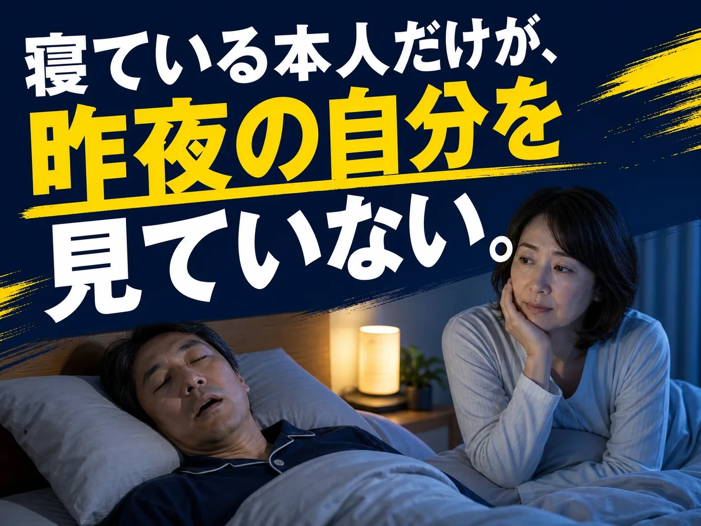
自分のいびきや、
寝ている間の呼吸。
家族に指摘されて、初めて気づくこともありますよね？
「いびきって、
うるさいだけでしょ？」

もし睡眠時無呼吸があれば、
影響は、夜だけとは限りません。
しっかり寝たつもりでも、会議中に眠くなる。睡眠中の問題が、翌日の眠気として現れることもあるんです。
「眠気だけなら…」と
思っていませんか？
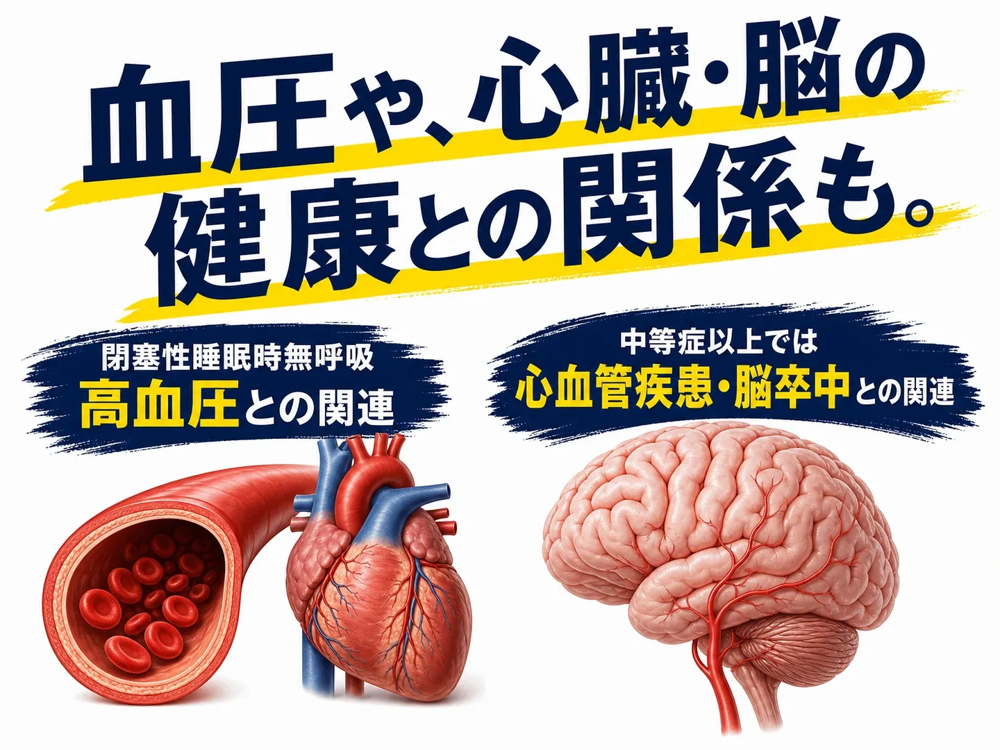
未治療の重症OSA男性で、心血管イベントが増えたという研究もあります。
※いびきがあるだけで、これらの病気になるという意味ではありません。閉塞性睡眠時無呼吸（OSA）と健康リスクに関する説明です。出典
気になるサインが重なるなら、
「今は困っていない」だけで
先延ばしにしないために。
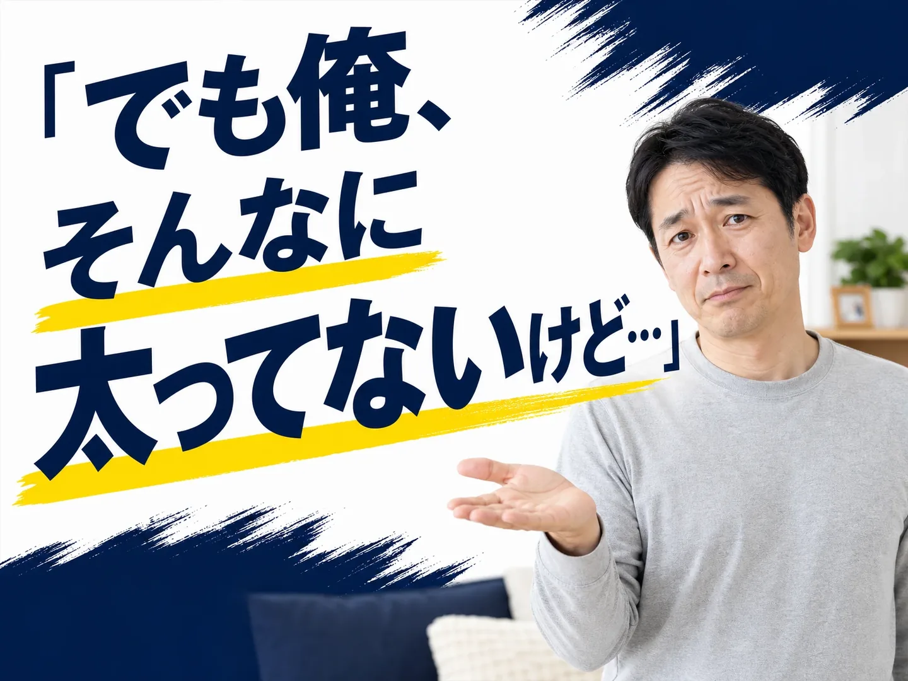
関係するのは、
体重だけではないんです。
気道の状態
喉周辺の組織
肥満は要因の一つ。ただ、顎の形や気道の状態なども関係するので、体重だけでは分かりにくいんです。
「自分だけなのかな…」と
抱え込まなくていいんです。
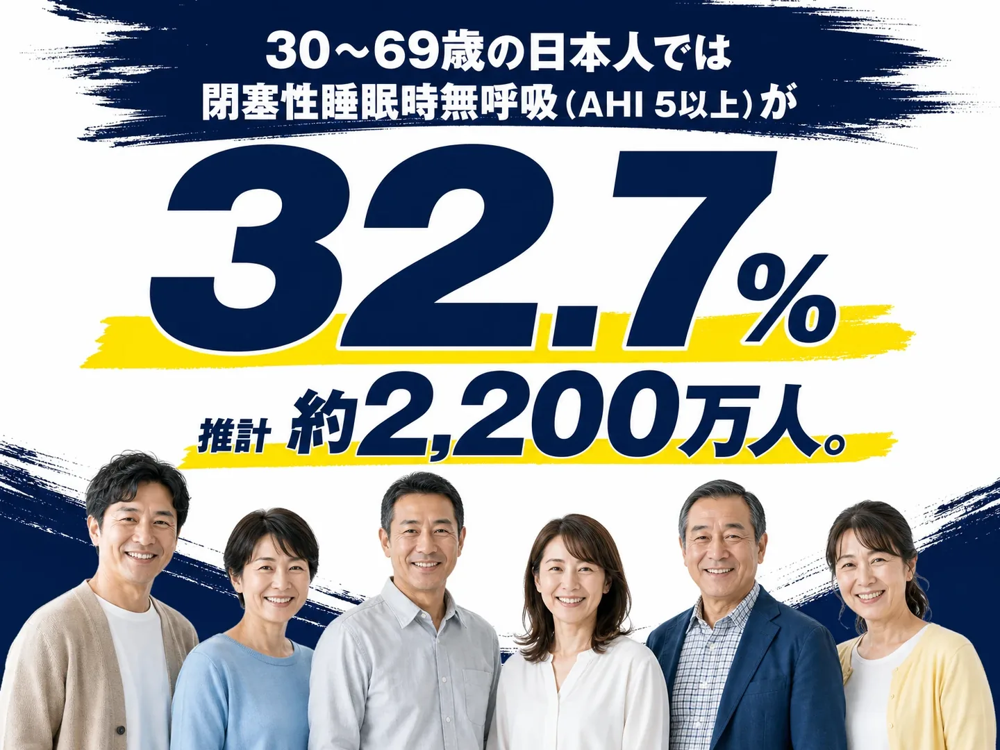
※30〜69歳を対象とするモデル推計です。全国実測値や、睡眠時無呼吸症候群と診断された人の割合ではありません。Benjafieldら（2019）。研究の出典
チェックで当てはまっても、
「自分だけがおかしい」
と思わなくて大丈夫！
同じような人がいると分かると、少し気持ちが軽くなりますよね。気になるサインがあれば、自分の場合はどうなのか、相談するところからでいいんです。
「じゃあ、どうすればいい？」
実は、治療には
いくつかの選択肢が
あるんです。
- 生活習慣の見直し
- 寝る姿勢
- 口腔内装置
- CPAP
- 手術
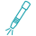
レーザー治療
原因や重症度によって、適した方法は変わります。どれが合うのかは、医師と一緒に確認できるんです。
※睡眠時無呼吸症候群が疑われる場合は、適切な検査が必要です。
ひとりで悩まず、
いびきを相談できる場所へ。
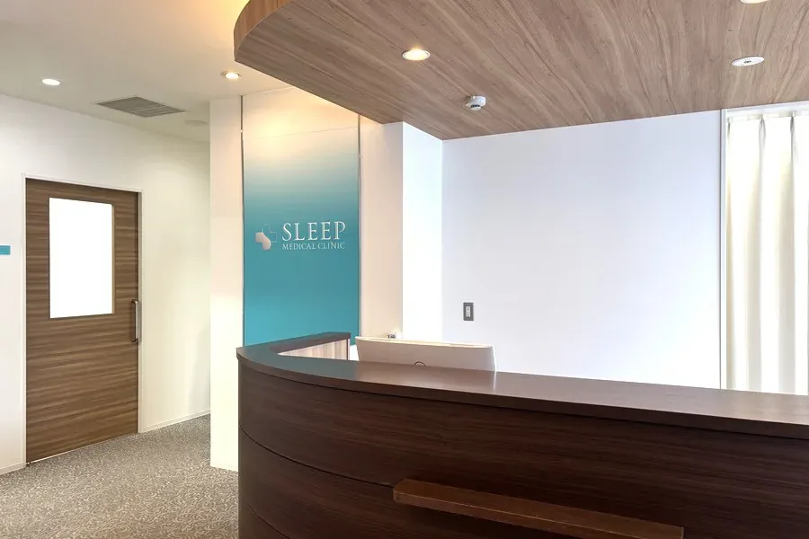
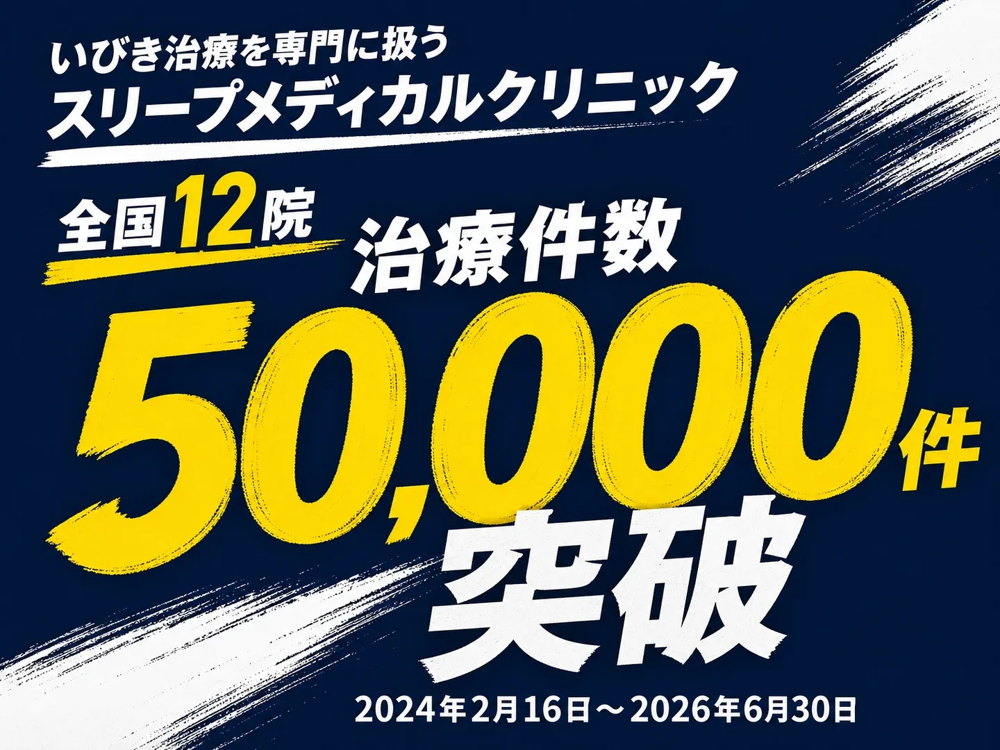
※治療件数：2024年2月16日〜2026年6月30日。公式サイト掲載情報
「いびきを指摘された」「朝から眠い」「息が止まっていたと言われた」。気になっていることを、そのまま相談できるんです。
※同院ではSAS検査自体は行っておらず、疑われる場合には提携医療機関の案内サポートがあります。
でも
「レーザーって、
痛くないの？」
なんと！
今は、こんな治療も
あるんです！
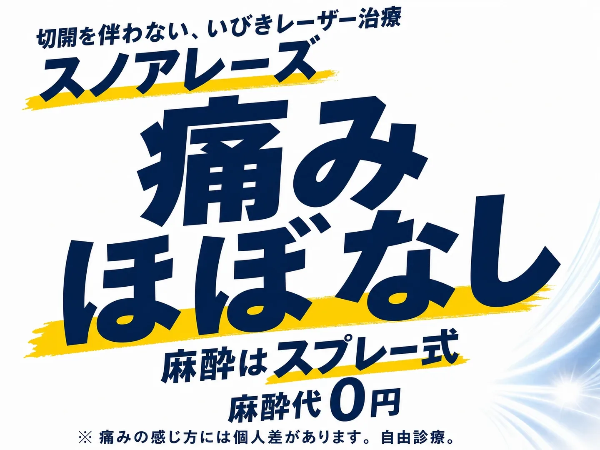
口の中から喉周辺へ、2種類のYAGレーザーを照射。喉の粘膜を引き締め、いびきの改善を目指す治療なんです。
※適応や必要な治療は状態によって異なります。
「仕事があるけど、
治療に時間はかかる？」
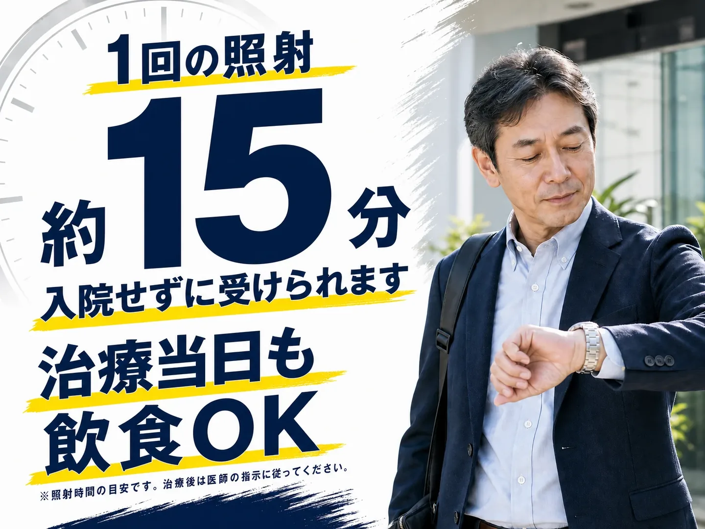
※照射時間の目安で、診察等を含む滞在時間とは異なります。喉のイガイガ・違和感が生じる場合があります。治療後は医師の指示に従ってください。
仕事帰りにも、
通いやすいんです。
駅近・平日は20時まで
※診療時間は院によって異なります。
「毎晩、機器をつけて
寝る治療なの？」
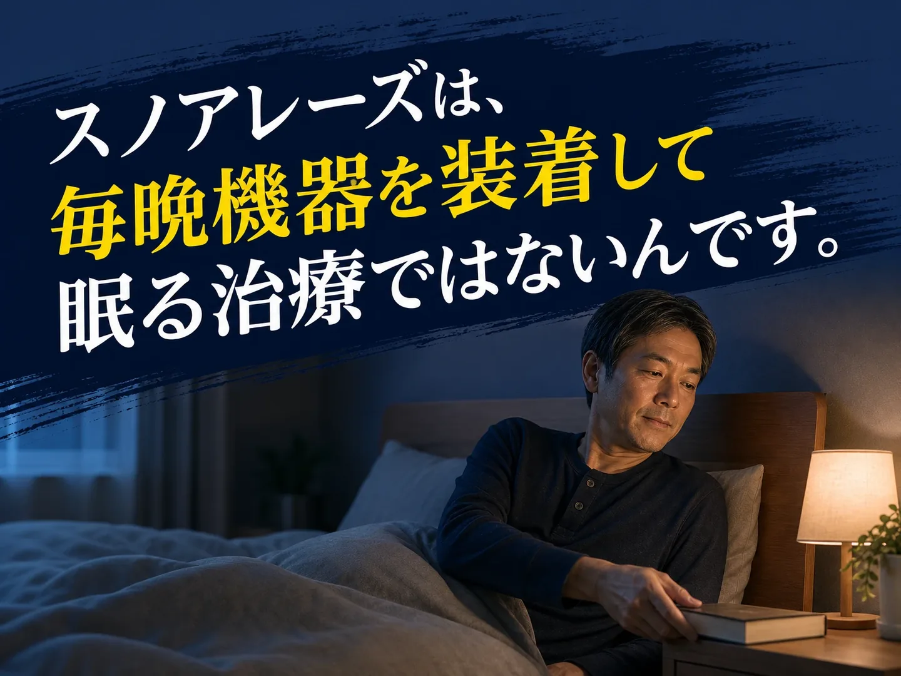
※必要な治療は状態によって異なります。現在のCPAP等を自己判断で中止しないでください。
治療を考える、その先に。
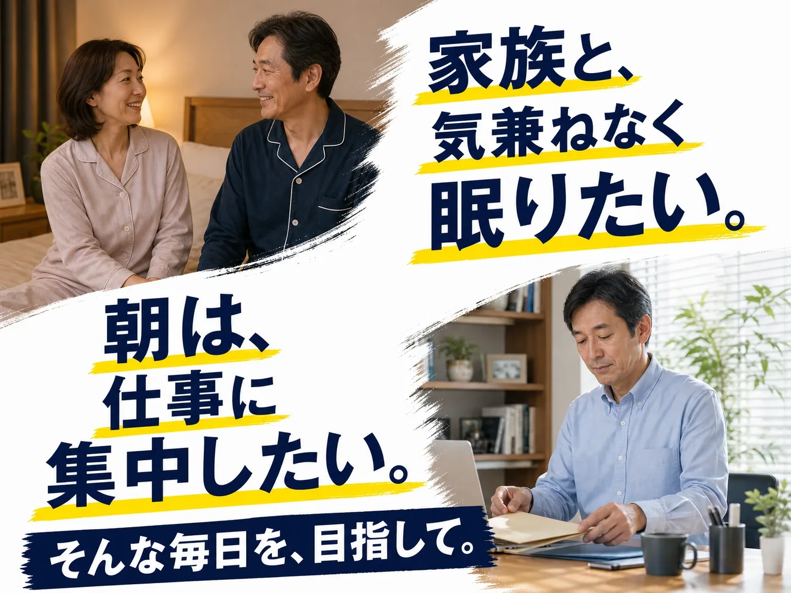
※目指したい生活のイメージです。治療による変化には個人差があります。
その悩み、
まずは相談から始めませんか？
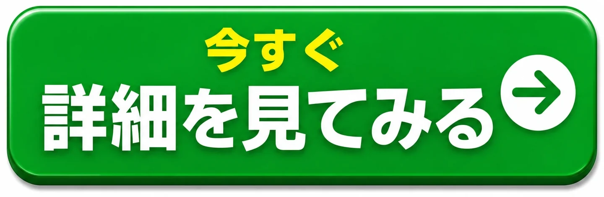
「でも、こういう治療って
高いんじゃない？」
気にはなるけど、まとまった費用を一度に用意するのは難しい。そんなときに、分割払いという方法もあるんです。
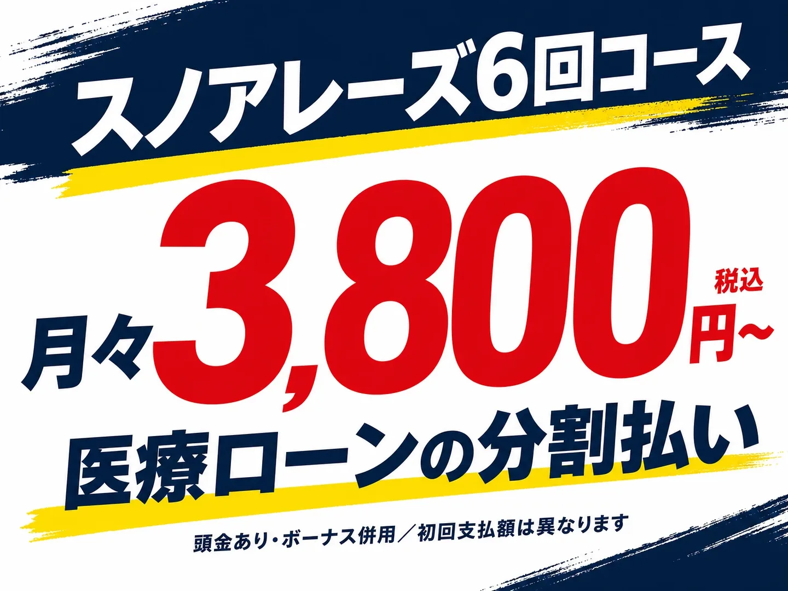
※頭金あり・ボーナス併用の場合の月々の支払額です。初回支払額は異なります。
「相談だけでも、
行っていいんですか？」
気になることを、
そのまま聞いていいんです。
- 自分に合う治療方法は？
- 通院は何回くらい？
- 費用や支払い方法は？
※適した治療や必要回数は、原因・状態によって異なります。
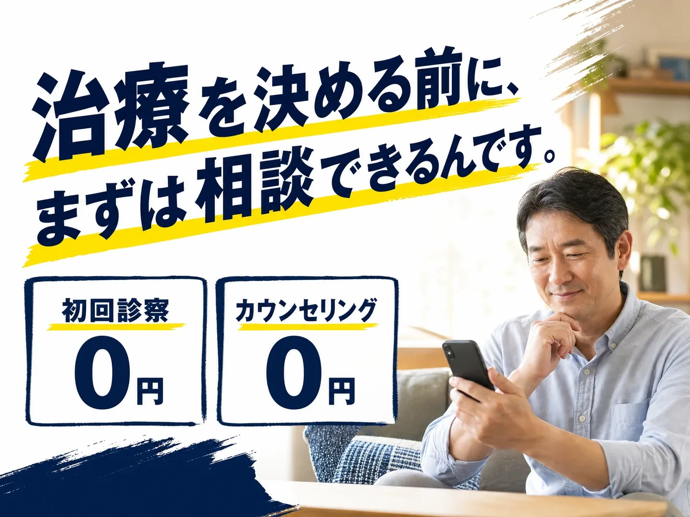
完全個室で、
気になることを相談できます。
「また今度」にする前に。
まずは、相談する日を
決めてみませんか？